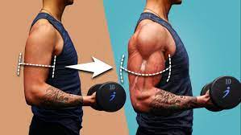

HTG_GYM_CLUB
Tips_About_Body_Building
Welcome to Hurtle_Geo_Gym_club.
Bodybuilding is an intense form of exercise that focuses on developing and strengthening the muscles of the body. It is a great way to stay in shape, build strength and confidence, and even improve your overall health. If you are interested in taking up bodybuilding, it is important to understand the basics of how the sport works and what you need to do to get started. Here it is a quick overview of bodybuilding and some tips for getting started. Bodybuilding involves using weights and machines to strengthen and tone the muscles of the body. This can be done through a variety of exercises, including lifting weights, doing bodyweight exercises, using resistance bands, and using machines. When it comes to bodybuilding, nutrition is key. Eating a balanced diet of protein, carbs, and healthy fats is essential for building muscle and maintaining a healthy weight. Iti s also important to stay hydrated and get enough rest in order to recover from workouts and avoid injury. When starting out,it is important to create a routine that works for you. Start with light weights and gradually increase the intensity as you become more comfortable with the exercises. It is also important to focus on form and technique.
Quick_Tips_About_Progressive_Weight_Lifting.
Weight lifting is a great way to get fit and stay healthy, and progressive weight lifting is a great way to maximize your potential. Progressive weight lifting is a training technique that gradually increases the amount of weight lifted over time. This type of weight lifting is beneficial for a number of reasons and can help you reach your fitness
One of the main benefits of progressive weight lifting is that it helps to increase muscle size and strength. As you increase the amount of weight that you are lifting, your muscles become stronger and larger. This increase in muscle size and strength can help you become more efficient in your day-to-day activities, as well as in your workouts.
In addition to increasing your muscle size and strength, progressive weight lifting can also help to reduce your risk of injury. When you lift heavier weights, you are more likely to use proper form and technique, which can help to reduce your risk of developing an injury. This is especially important if you are lifting weights on a regular basis.Finally, progressive weight lifting can help to improve your overall health. As you become stronger and more conditioned, your body will become better equipped to handle the physical stresses of daily life. This can help to reduce your risk of developing chronic illnesses and other health..